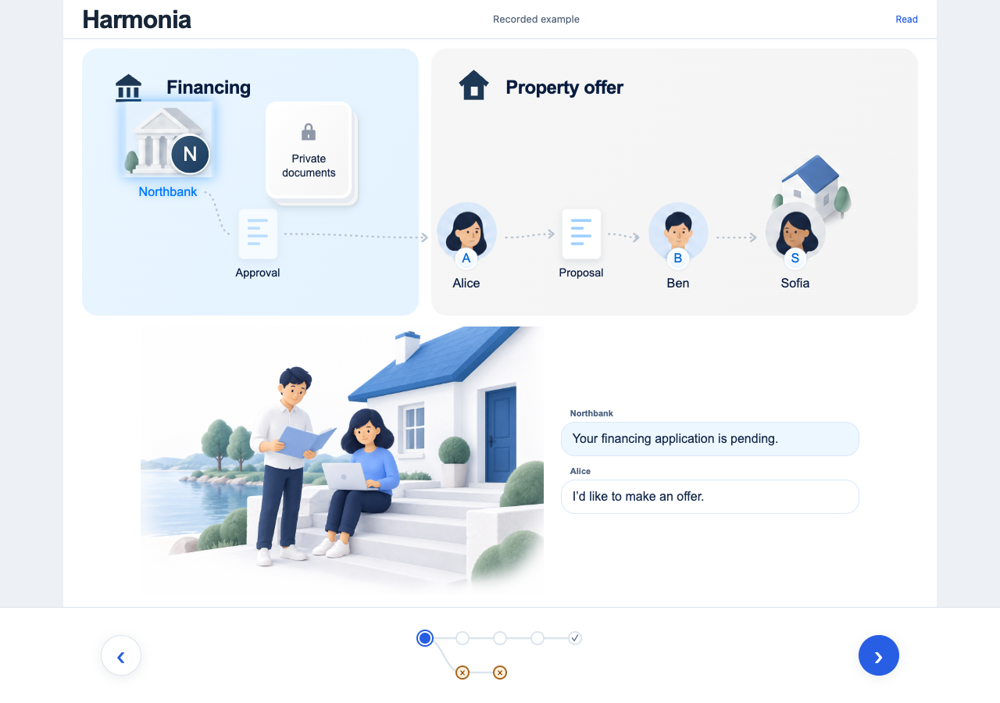
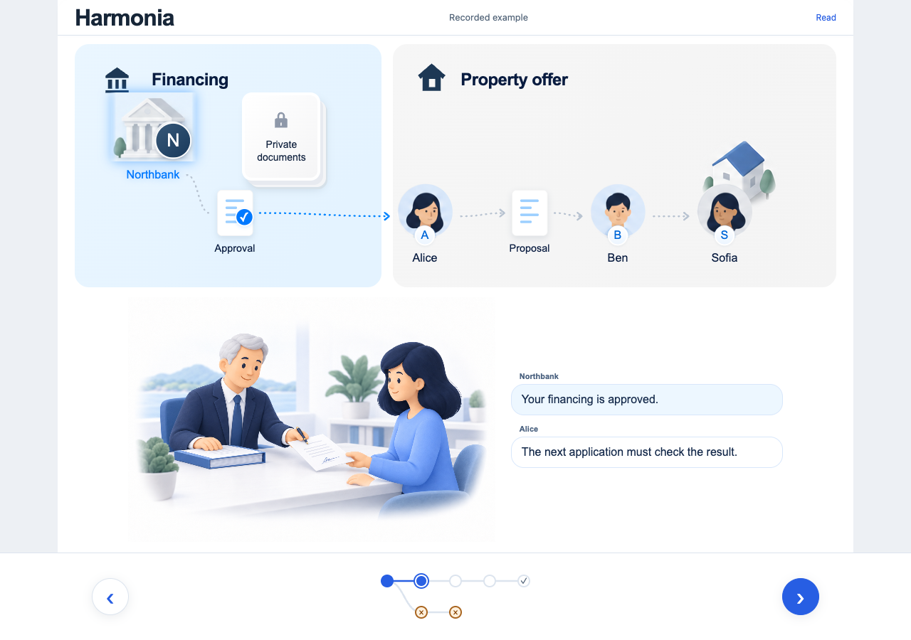
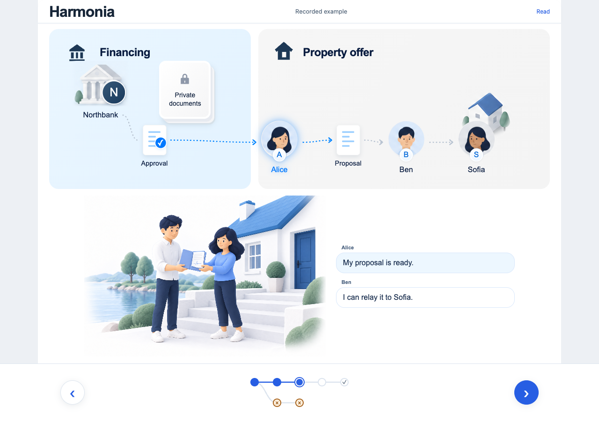
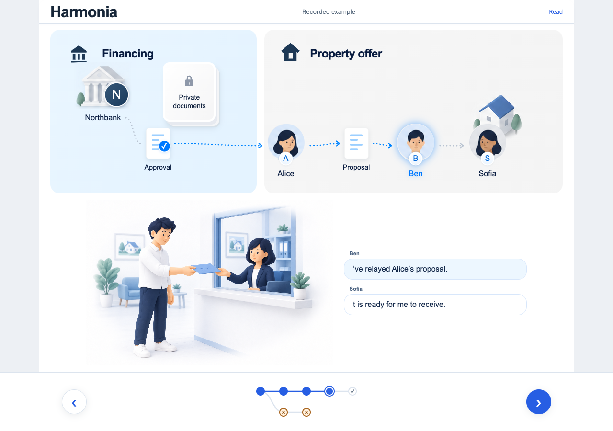
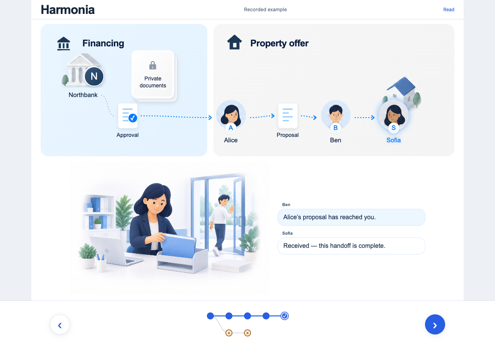
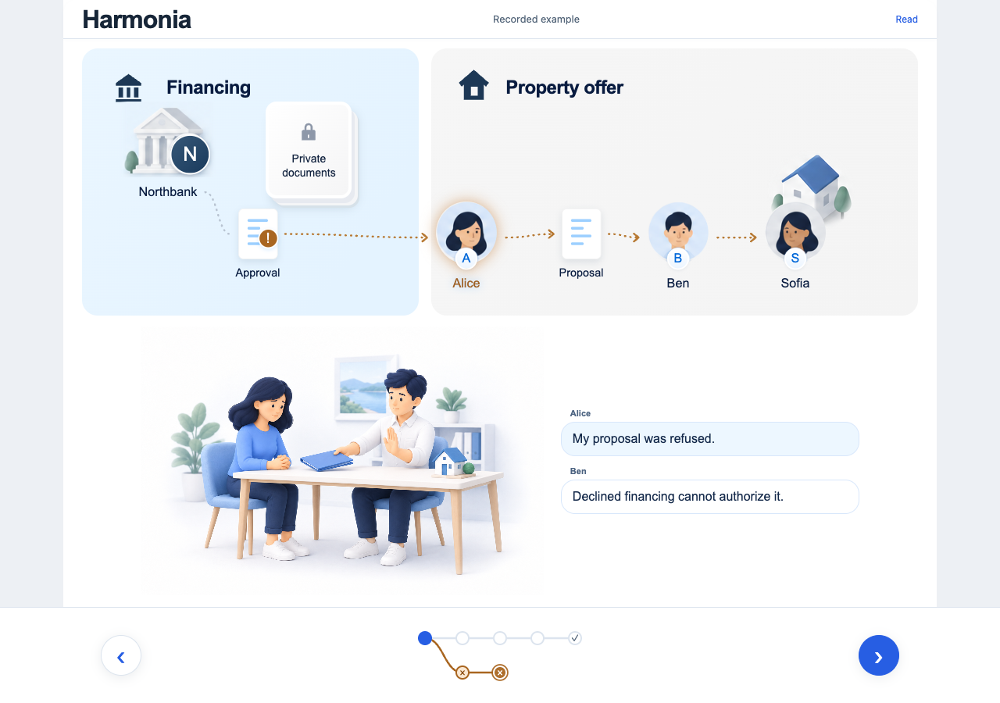

Start with Alice's goal

The existing bank-to-property infographic: Alice, Northbank, Ben and Sofia, each with a clear role.
Sources: purchase · proposal
Keep the approved UI. Organize the content around the question each reader brings.
All twelve page summaries and their selected references are unfolded here. Read each region left to right.
What does this let me do?
Alice wants to make a property proposal with her bank's approval.

The existing bank-to-property infographic: Alice, Northbank, Ben and Sofia, each with a clear role.
Sources: purchase · proposal




Northbank approves → Alice proposes → Ben relays → Sofia receives. Each stop shows its consequence below the stable infographic.
Sources: purchase

The same purchase has two explicit endings in its carousel: proposal received, or financing declined and the proposal blocked.
Sources: purchase · purchase-declined
This region ends here. I understand the journey and can recognize its outcome.
Show me what Harmonia makes possible on Canton.
For Canton ecosystem builders and technical investors: a Keynote-style demonstration, with one model, action and observable consequence per scene.
Parties are hosted by participant nodes. This recording uses a local synchronizer, not the Global Synchronizer.
Recorded Canton environmentthree independent participant nodes, one local JVM, one common synchronizer
Northbank, Alice and Olivia are distinct parties, each on its own participant. Shared progress begins waiting.
| Party | Private application | Shared progress |
|---|---|---|
| Northbank | visible | visible |
| Alice | not visible | visible |
| Olivia | not visible | visible |
The private application stays with Northbank. Daml restricts approval to the bank and continuation to the owner; a scoped result bridges those actions.
Sources: private-recording · ledger-choice · shared-progress · result
The reusable core exercises an interface. The compiled binding reaches the existing application choice.
Recorded Canton environmentone participant, one synchronizer, separate party identities
One participant hosts separate party identities. A compiled adapter wraps the source application; the workflow holds a StepAction contract.
The source choice still enforces its authority. This is the recorded generated-adapter example, not a claim that every DAR can be integrated.
Sources: adapter-recording · workflow · binding · action-interface · legacy-application
The local recording uses four participant nodes and one common synchronizer. Preparation is outside the final transaction.
Recorded Canton environmentfour independent participant nodes, one local JVM, one common synchronizer
Four participant nodes share one local synchronizer. The source has locked 10 TEST and the destination has prepared its receiving permit.
The eligible Settle choice performs withdrawal, receipt and trade replacement in one update. Earlier consent and preparation were separate transactions.
Sources: transfer-recording · settlement
This region ends here. I can explain and demonstrate the Canton mechanism, including its authority and transaction boundaries.
Which boundaries, dependencies and invariants make this work?
For senior engineers: six inspectable diagrams, with explicit meanings for nodes, arrows and transaction boundaries.
Runtime connections. Participant nodes validate Daml; sequencer and mediator handle synchronization. Protocol roles follow Digital Asset’s 3.4 documentation.
Compile-time imports, not transaction flow. The shared interface does not import the application packages.
First locate the Scala service, participant nodes and synchronizer components. Then inspect the Daml package imports; arrows point toward dependencies.
Sources: http · workspace · ledger-client · workflow · core · action-interface · binding · native-application · legacy-application
HTTP acceptance is not ledger commitment. The later state request reads participant-visible contracts; submission errors are classified separately.
SubmitChoice and Workspace preserve uncertainty. Reconciliation checks ledger observations; a transport failure is not classified as a rejection.
The sequence shows HTTP acceptance separately from ledger completion. The state diagram explains why a transport failure requires reconciliation rather than an assumed rejection.
Sources: http · workspace · submit · ledger-client · observation
Production contract design. Approve and Continue are distinct updates. VerifiedResult is consumed, not reused as an unbounded permission.
Consent, source locking and destination preparation precede this boundary. Failure within this final update rolls back its custody operations together.
Trace issuer, consumer and continuation checks through proof consumption. Separately inspect the exact Settle transaction boundary after staged consent.
Sources: ledger-choice · result · shared-progress · settlement
This region ends here. I can trace deployment, imports, execution, visibility and atomicity back to their production owners.
Does the production code make sense?
For Miguel’s code review: production files, their responsibilities and the real execution path.
product/web/src/main/scala/harmonia/financing/
Render the financing workspace.
product/api/src/main/scala/harmonia/financing/
Define the shared actions and state.
product/server/src/main/scala/harmonia/financing/
Select the application choice.
product/server/src/main/scala/harmonia/app/workspace/
Compose IO submission and observation.
product/ledger/applications/private-financing/daml/
Authorize the bank and create its result.
product/ledger/core/daml/Harmonia/
Consume matching evidence and continue.
Read each file’s responsibility, then follow the financing slice into its types, application choice and observed result.
Sources: screen · api · feature · workspace · ledger-choice · shared-progress
/** Maps a supported financing operation to its actual application choice. */object Financing: def select( action: FinancingAction, snapshot: FinancingObservation ): Option[LedgerExercise] = action match case FinancingAction.Approve => snapshot.application.map(application => LedgerExercise(application.contract, "Approve", LiveLedger.emptyArgument) ) case FinancingAction.Continue => snapshot.progress.map(progress => LedgerExercise(progress.contract, "Continue", LiveLedger.continuation(snapshot.proof)) ) choice Approve : (ContractId Application, ContractId VerifiedResult) controller bank do assertMsg "Application must be pending" (status == "pending") next <- create this with status = "approved" result <- create VerifiedResult with issuer = bank; consumer = buyer; readers = reviewers; subject; decision = "approved"; continuation = "shared-progress:" <> subject pure (next, result)Read the production Financing.select function beside the matching PrivateFinancing.Approve choice. Both excerpts are taken directly from the repository.
Sources: feature · ledger-choice
object SubmitChoice: def apply( ledger: ParticipantLedger, operation: LedgerExercise, commandId: String ): IO[SubmissionResult] = ledger .exercise(operation.contract, operation.choice, operation.argument, commandId) .map(tx => SubmissionResult(Committed, "Confirmed by the ledger", Some(tx))) .handleError { error => val code = Status.fromThrowable(error).getCode val definite = Set( Status.Code.INVALID_ARGUMENT, Status.Code.FAILED_PRECONDITION, Status.Code.PERMISSION_DENIED, Status.Code.NOT_FOUND, Status.Code.UNAUTHENTICATED ).contains(code) SubmissionResult( if definite then Rejected else Unconfirmed, if definite then s"Ledger rejected the command ($code)" else "No definitive completion received. Reconnect to reconcile; do not assume failure." ) } def state(actor: String): FinancingState = val eligible = Vector( Option.when(actor == "bank" && application.exists(_.status == ApplicationStatus.Pending))( FinancingAction.Approve ), Option.when(actor == "buyer" && workflow == ProgressStatus.Waiting && proof.nonEmpty)( FinancingAction.Continue ) ).flatten FinancingState( actor, version, workflow, application.map(_.status), application.map(_.privateDetails), proof.nonEmpty, eligible, if workflow == ProgressStatus.Complete then "Complete" else if proof.nonEmpty then "Buyer continues" else "Waiting for bank approval" )Inspect SubmitChoice’s IO result classification, followed by the projection that derives eligible actions and displayed state from visible contracts.
Sources: submit · observation
This region ends here. I can review the production feature from its typed input to Daml authority and observed output.